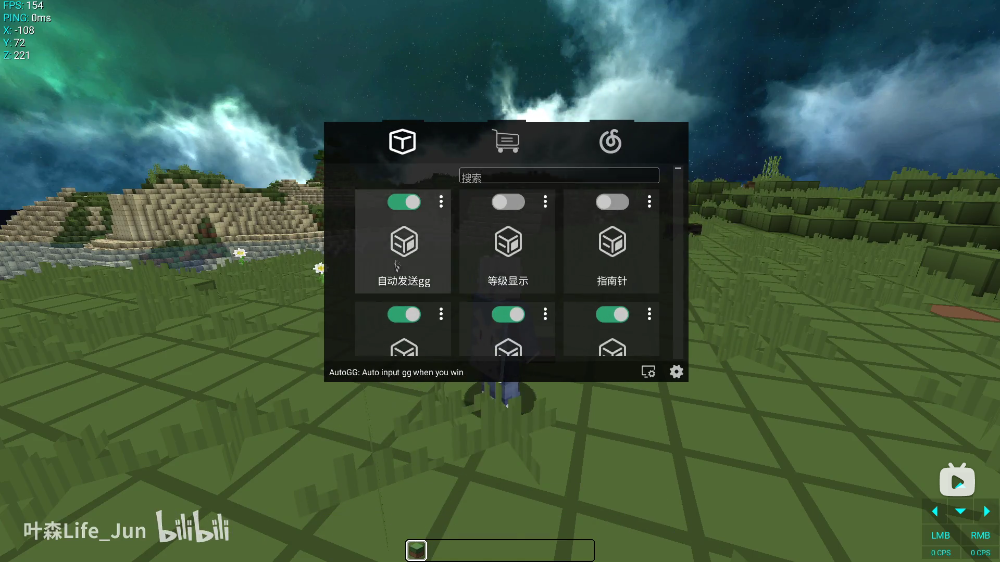
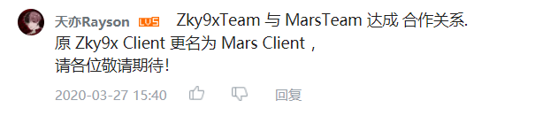

说明：Mars客户端(后改名为Zky9x客户端)这个项目已经夭折了，这篇文章仅仅只是做个纪念 😃
项目起初
-
发起项目的原因
- 起初发起这个项目的目的仅是为了娱乐。在当时国内没有任何一个让很多人知晓的PVP客户端，所以我便萌生想做一个”中国第一个PvP客户端“，来获得成就感。
- 打算退黑客圈。在做Mars客户端之前，我一直在黑客圈混，跟另外两个人一起做Zelix(一个黑客端)。在做Zelix的时候，我是想赚大钱的。但当初Zelix只是十几个人的使用的私人端，并且由于没有很好的保护，Zelix一直不敢卖。后来由于种种原因，我打算退圈。
-
Mars客户端的开发过程
-
客户端开发之初
base是我一个人搭建的。当时边上网课边搭这个base(现在想想真后悔)，最终是花了3-4天把base，mods，ui等基本的代码写好了，就打算开始宣传，计划着搞一个噱头，先内测，之后在搞公测。
当时我在b站发了一个动态，内容大致是：中国第一个Minecraft PvP客户端，参与内测抽奖的方式和QQ交流群号。之后找来了一个人（新建文件夹 张程宇），让他帮我在心灵澈风交流群（曾经黑客圈的核心圈，基本上都是圈里数一数二的人物，这含金量你懂吧）发了一个公告，放上了b站动态链接。两三天后，有很多人转发动态，参与抽奖，使这条动态的浏览量达到了接近4w（在一个几百粉丝的账号上）。Mars客户端得到了很好的宣传，并开了一个好头。
之后还引来了一些up主帮忙做视频宣传，也起到了很好的宣传效果。

-
与Zky9x合作
Zky9x服务器当初正想做一个PvP客户端，也正想抢”中国第一个PvP客户端”的名头，但无奈被我抢了哈哈哈。因此后来他们找我谈合作，他们给我设计客户端UI和Logo，Mars客户端和Zky9x服务器做一个对接。当时就我一个人在搞，我设计也很垃圾，便答应了。

-
客户端内测
在内测资格抽奖结果公布后的第五天，我发布了Mars的第一个Alpha版本。不出意外，出了很多问题。例如代码混淆之后FPS降低、打开背包物品栏颜色显示错误、打开设置界面背景本应是有透明度的但是全黑、防砍动画不好看、功能太少、鱼竿动画有bug等等，很影响用户体验。这些再加上一些人的催促我赶快公测，让我的心情很烦。于是我加紧了Mars客户端的开发，再按照Zky9x他们给的设计图重绘UI，把一个个bug修好。
此时的心情
很急躁，很糟糕。在开发的过程中遇到了很多问题，我记得有个bug修了2，3天都还没修好，一直没有头绪，人的精神状态很差，感觉头脑快炸开了，却一直修不好。我记得当时并不是没有解决方法，但我总觉得这种方法不太好，所以一直在寻找另一种更好的解决方法。
然而最后的结果依旧是用那种不太好的方法将就过去。
-
开发团队
开始时整个开发团队只有我一人。后来我拉来了 PokeS (帮我搞了Mars客户端注册网页和后端)，镜子 (帮我搞了Mars的反作弊)，Enaium (很可惜他进来的时候Mars已经在夭折的路上了) 和 Hell (帮忙提了些建议)，组成了一个开发团队。
但实际上Mars客户端90%的开发依旧是由我来承担，开发团队并没有很好分担我一个人的开发精力。
-
客户端公测
这可以说是一个很关键的节点了，从此客户端的发展由盛转衰。
2020年4月10日，Mars Beta发布。Beta版重绘了操作界面，基本上实现了设计图的效果。Beta版使用了ZKM混淆（这是一件非常脑残的事情，混淆后FPS下降大概有10-30fps）。注册方式采用QQ机器人+网页注册，这也是之后Mars夭折的导火线。想了解历史的可以看这个视频Mars Client公测注册教学/客户端体验介绍。
Mars客户端公测时，出现了很多问题。有不会
About this Post
This post is written by makai410, licensed under CC BY-NC 4.0.